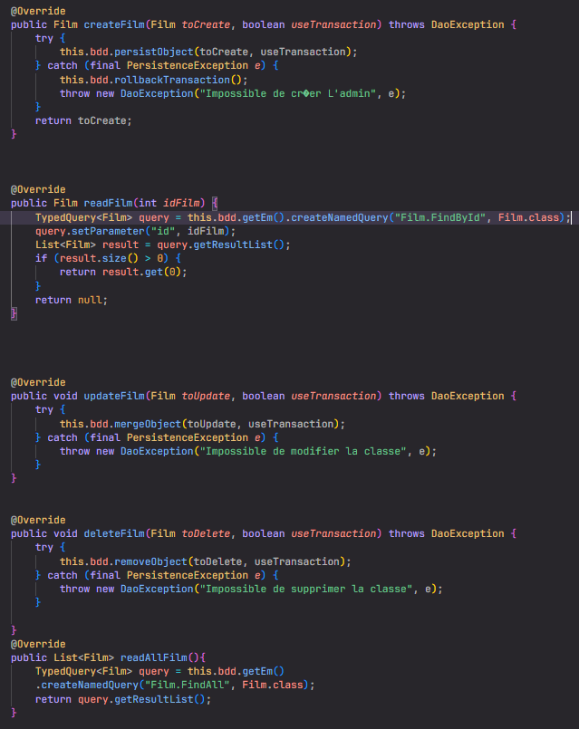
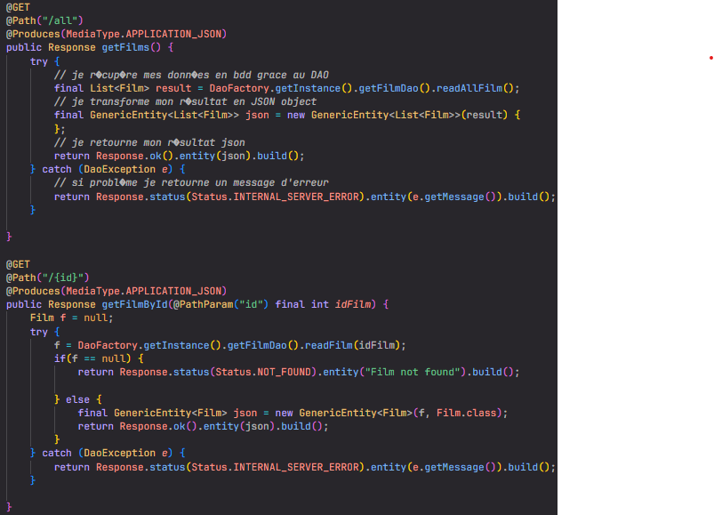

Le projet Cinetech, porté par Monsieur Anthony Roussel, fondateur de l'association "Du cinéma plein mon cartable," a pour ambition de démocratiser le cinéma en plein air dans les Landes, tout en favorisant le covoiturage pour accéder à ces projections. Dans un département où les transports en commun sont peu développés, avec de longs intervalles entre les bus et un accès limité, Cinetech s'engage à combler ce vide en offrant une alternative de mobilité pour les habitants. L'association "Du cinéma plein mon cartable" œuvre activement pour la diffusion culturelle et la lutte contre l'isolement socio-culturel à travers diverses initiatives cinématographiques, et le projet Cinetech s'inscrit parfaitement dans cette mission.
La vision globale de Monsieur Anthony Roussel et de l'association "Du cinéma plein mon cartable" est de rendre le cinéma en plein air accessible à tous, indépendamment des contraintes de transport et des barrières socio-économiques. Cinetech représente ainsi bien plus qu'une simple initiative de divertissement : c'est une plateforme qui favorise l'inclusion sociale, la diversité culturelle et la cohésion communautaire dans les Landes.
Le projet Cinetech, élaboré selon la méthodologie agile SCRUM, a permis une livraison incrémentale des fonctionnalités à la fin de chaque sprint de trois semaines, avec des réunions régulières à la fin de chaque sprint pour présenter l'avancement du projet. Ces réunions ont offert à Monsieur Roussel un suivi continu du projet, lui permettant de donner son avis et de faire part de ses retours pour orienter les développements futurs.
Au début du projet, une réunion a été organisée pour bien comprendre les attentes de Monsieur Roussel et de l'association, tandis que des réunions régulières à la fin de chaque sprint ont permis de montrer l'avancement du projet et de prendre en compte les retours pour ajuster les priorités des tâches.
En tant que développeur central, j'ai dirigé l'élaboration du BackEnd et la gestion de la base de données pour assurer un stockage efficace des données liées aux projections et aux covoiturages. J'ai principalement travaillé sur la création de Data Access Objects (DAOs), la mise en place de services fonctionnels, et le développement des contrôleurs en utilisant Java comme principal langage de programmation. Cette phase cruciale a permis d'établir une structure solide pour les informations relatives aux projections de films, aux utilisateurs et aux covoiturages.
Parallèlement, j'ai contribué de manière significative à la conception de l'interface de programmation d'application (API) pour faciliter la communication harmonieuse entre le BackEnd que j'ai développé et la partie FrontEnd conçue avec Angular. Mon implication s'est étendue à l'aspect visuel de l'application, où j'ai travaillé sur l'interface utilisateur pour offrir une expérience fluide et attrayante, en mettant notamment l'accent sur l'interface d'administration. Une part importante de mon travail a été consacrée à la mise en place d'un système de gestion des séances de films et de covoiturages, une fonctionnalité administrative cruciale pour superviser et coordonner efficacement les différents éléments du projet.

DAO de l'application Cinetech

API concernant les films
Après la livraison du projet à Monsieur Roussel, avec signature d'un PV de livraison et sa satisfaction exprimée, nous n'avons cependant pas reçu de nouvelles quant à la mise en ligne de l'application à ce jour.
Personnellement, ce projet m'a offert une opportunité précieuse de découvrir l'intégration de technologies Java et Angular dans un même projet, ainsi que la communication entre le BackEnd et le FrontEnd via des appels API. Cette expérience m'a permis d'approfondir mes compétences techniques dans le développement Full Stack et d'acquérir une compréhension approfondie de l'architecture logicielle dans un contexte réel. En travaillant sur la mise en place de l'API et en collaborant avec l'équipe de développement FrontEnd, j'ai pu apprécier l'importance de la cohésion entre les différentes couches d'une application pour garantir son bon fonctionnement et sa convivialité pour les utilisateurs finaux. De plus, cette expérience m'a également sensibilisé à l'importance de la communication au sein d'une équipe de développement. La collaboration étroite avec mes collègues a facilité le partage des connaissances, l'identification des problèmes potentiels et la résolution efficace des défis techniques rencontrés tout au long du projet.
En rétrospective, si je devais reprendre ce projet, je focaliserais particulièrement sur l'optimisation des DAOs et des accès aux données dans la base pour garantir une meilleure performance et une maintenance simplifiée.
PETRAU KILLIAN